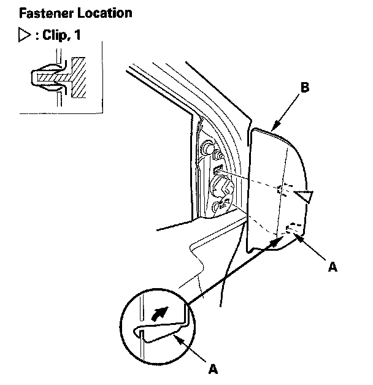
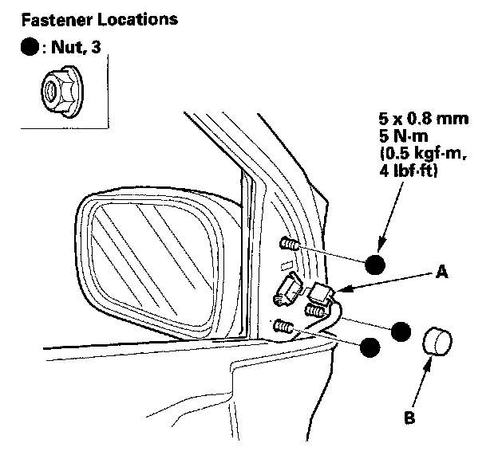
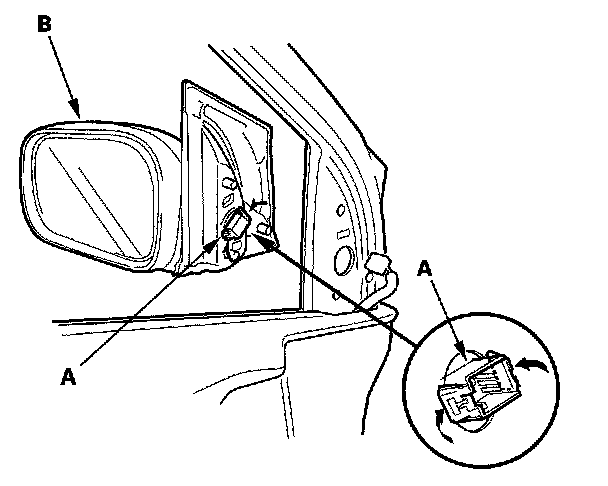
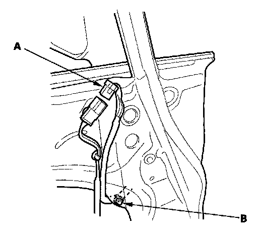
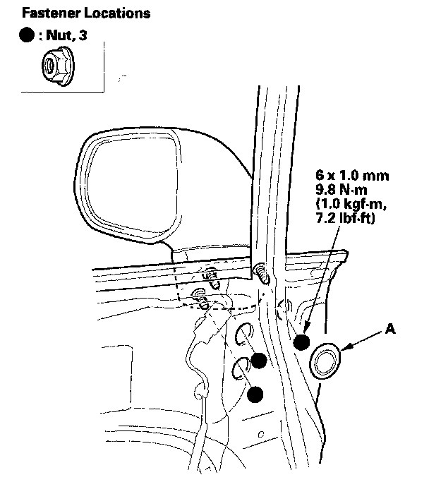
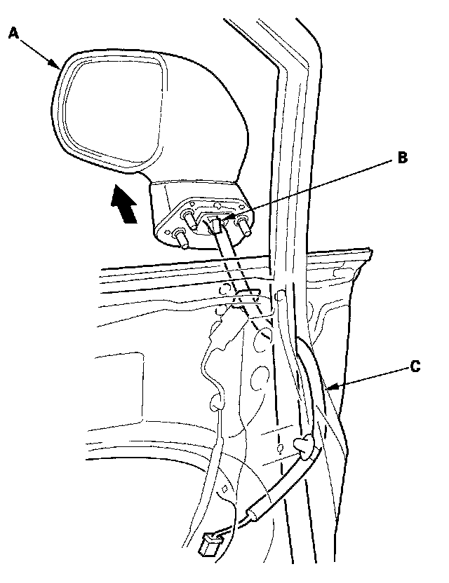

Power Mirror Replacement
Power Mirror Replacement2-door
1. Lower the door glass fully.

2. With your hand, carefully release the clip, lift the cover upward to release the hook (A), and remove the mirror mount cover (B) in the sequence shown.

3. Disconnect the connector (A), and remove the cap (B).
4. While holding the mirror, remove the nuts securing the mirror.

5. While holding the mirror, push in on the connector clip (A), then push out to remove the mirror (B). Take care not to scratch the door.
6. Install the mirror in the reverse order of removal, and make sure the connector is plugged in properly.
4-door
1. Raise the door glass fully.
2. Remove these items:
- Door panel
- Plastic cover, as needed

3. Disconnect the connector (A), and detach the harness clip (B).

4. Remove the maintenance caps (A), and remove the nuts.

5. While holding the mirror (A), detach the clip (B), then remove the mirror, and pull the harness (C) out through the hole in the door. Take care not to scratch the door.
6. Install the mirror in the reverse order of removal, and make sure the connector is plugged in properly.